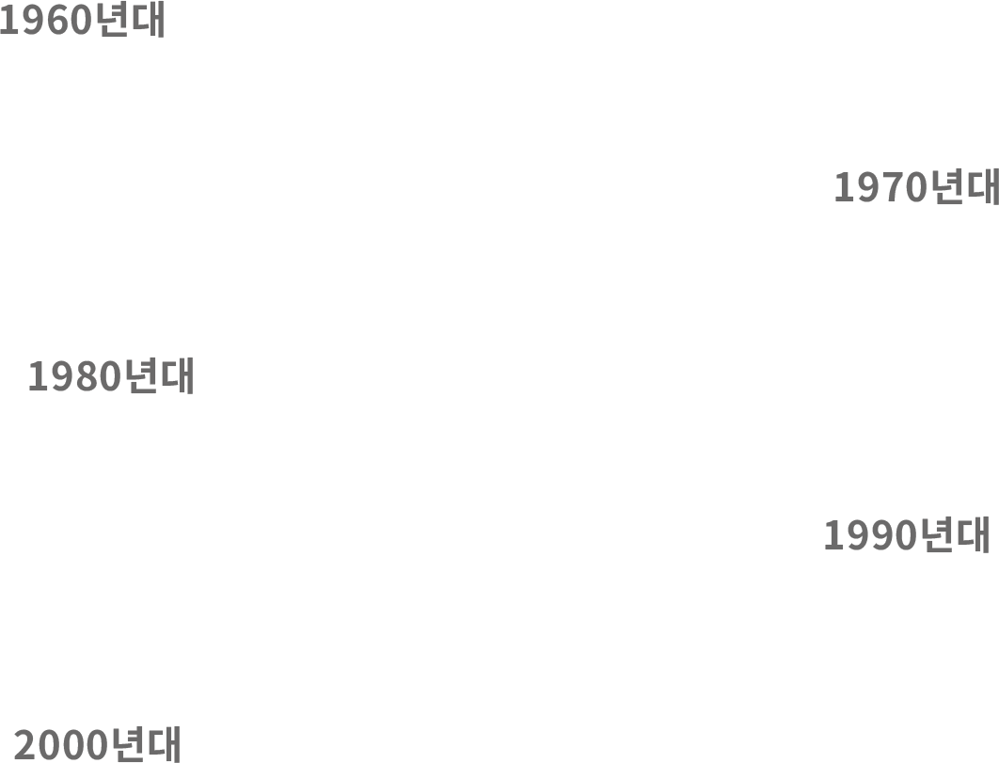

노예의 나라, 한국

2025년 4월 미국정부는 대한민국 신안군의 태평염전에서 장애인 등
사회적 취약계층을 상대로 임금체불과 학대를 자행하는 일이
사실임을 확인하고 태평염전의 수입을 금지해 대한민국 정부와
지자체에 큰 반발을 샀습니다. 하지만 반세기가 넘게 계속되는
섬노예 등 닫힌 사회의 장애인 노예 사례를 방관해 온 대한민국에서는 아직까지 수많은 장애인들이 닫힌 사회에 갇혀 심각한 노예착취에 시달리고 있습니다.
사실임을 확인하고 태평염전의 수입을 금지해 대한민국 정부와
지자체에 큰 반발을 샀습니다. 하지만 반세기가 넘게 계속되는
섬노예 등 닫힌 사회의 장애인 노예 사례를 방관해 온 대한민국에서는 아직까지 수많은 장애인들이 닫힌 사회에 갇혀 심각한 노예착취에 시달리고 있습니다.
